特色旅游
1日游
2-4日游
5-10日游
精品长线旅游
地址：匈牙利 布达佩斯 Budapest-Keleti, 1087
电话：0036-30-9574162
邮件：rrjourneys@gmail.com
网站：http://www.rrjourneys.com
【美景】
巡礼世界文化遗产
走进中世纪童话王国
最严酷的城堡所在地-布尔诺
千塔之城-布拉格
最发达的城市-柏林
世界博览会之城-莱比锡
全球最重要的航空枢纽-法兰克福
童话故事《胡桃夹子与老鼠王》的发生地-纽伦堡
德国最美城市，2018世界最宜居城市-慕尼黑
音乐之都，2019世界最宜居城市-维也纳
【美食】
脆皮烤猪肘
德国酸菜
特色烤排骨
BBQ鸡翅
手工啤酒
巴伐利亚香肠
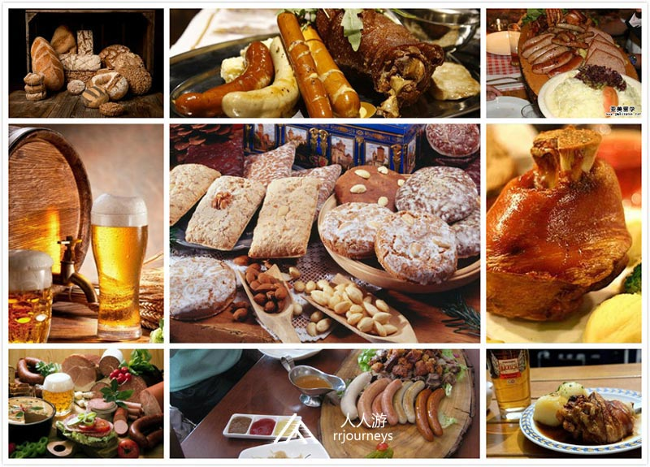
行程路线：
具体行程：
DAY1：布达佩斯-布尔诺
入住地点：布尔诺
参加成员请按通知的时间及地点集合，一同从布达佩斯出发，前往布尔诺。
布尔诺
这里被誉为“摩拉维亚的曼彻斯特”，它位于捷克南摩拉维亚州的高地东麓，斯夫拉特卡河和斯维塔瓦河汇合处，是捷克的第二大城市。生物学家孟德尔名留青史的豌豆遗传实验就是在布尔诺进行的。 布尔诺是一座闻名遐迩的旅游城市，旅游资源丰富，名胜古迹众多，其中圣彼得与圣保罗教堂是最知名的地标建筑，为捷克国家文化古迹，摩拉维亚南部最宏伟的建筑和该市的主要地标之一。斯皮尔博城堡、圣雅各伯教堂、圣母领报和圣多默宗教堂等也是必游之地。
景点：斯皮尔博城堡
斯皮尔博城堡曾被称为“奥匈帝国最严酷的城堡”，它坐落在捷克南部摩拉维亚地区的布尔诺市的山顶上，这座古老的中世纪城堡是13世纪建造的拥有护城河的巴洛克式的堡垒。它在过去曾是一座监狱，被认为是整个奥匈帝国最严酷的监狱。爬到山顶后可以看到城市的美丽景色。
景点：圣彼得与圣保罗教堂
圣彼得与圣保罗教堂是布尔诺最著名的地标，始建于15世纪，最突出的就是那两个84米高的塔楼，在城内各处都能看到。圣保罗教堂每天上午11点就会敲响12下。传说17世纪，瑞典军队攻打布尔诺，扬言12点拿下，否则退兵。到了11点，敲钟人把11点敲成12点，瑞典军队撤退。自此教堂每天上午11点报时正午。
景点：旧市政厅
旧市政厅是布尔诺最古老的世俗建筑，也是一件值得回味深思的特殊艺术品。1510年，在拉德尼卡的塔楼上开了个门，并由高贵的哥特式门框框起来。较低的位置装饰着骑士的雕像，上方装饰着骑士和镇长的雕像。中心是正义女神像。塔楼入口上方正中有五个石雕柱，正中间的石雕柱的尖端歪了，据传1511年建筑师未获得足够的酬劳而报复，却没想到这个故意的失误成就了它的特殊之处。
景点：图根哈特别墅
图根哈特别墅位于捷克城市布尔诺的图根哈特，是捷克为数不多的世界文化遗产之一。1938年的建筑，今天看起来依旧很现代，各种现代化功能，风景也是绝佳。据说这是欧洲现代主义功用建筑的鼻祖，设计师是德国人。这里建筑的花园是远眺布尔诺城的好地方。路德维希•密斯•凡•德•罗是这栋房子的建筑师-这是有史以来最杰出的建筑师之一。
DAY 2 布尔诺- 布拉格
入住地点：布拉格
布拉格
尼采说：“当我想以一个词来表达音乐时，我找到了维也纳；而当我想以一个词来表达神秘时，我只想到了布拉格，”布拉格就是这样一个神秘的城市，站在城市的高地，从高处俯瞰，高高低低的塔尖，毗连成一片塔林，在阳光照耀下，“百塔”显得金碧辉煌，犹如撒上了一层金粉一般。城内宏伟的建筑和广场，甚至是一砖一瓦都透露着她古老的神秘，由这种神秘滋生的浪漫更是让人沉醉于此。这个欧洲最美丽的城市，以她独特的魅力吸引着世界各地的游客来此领略她的风采。
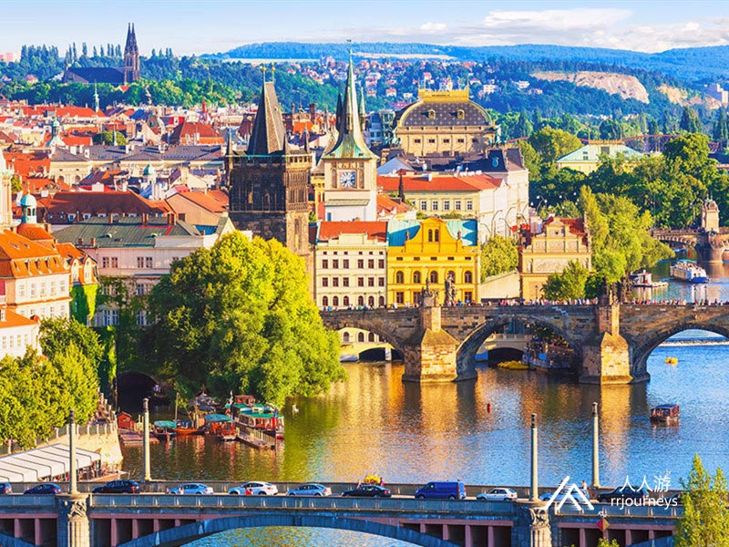
景点：查理大桥
查理大桥建于14世纪，是捷克历代国王加冕游行的必经之路，常有人说“走过这座桥才算来过布拉格”，它被誉为“欧洲的露天巴洛克塑像美术馆”。桥上有三十尊圣者雕像，据说每尊雕像背后都有一段感人的故事，而且只要用心触摸石雕像，便会带给此人一生的幸福。 周杰伦有张婚纱照便是以这座桥为背景拍摄的。
景点：布拉格城堡
这里是世界最大的城堡群之一，作为波西米亚王国的标志已有1000多年的历史了。城堡始建于公元9世纪, 以前是波西米亚王宫, 现在是捷克总统府。城堡是世界上最大的城堡建筑群, 其中包括古老的宫殿、官府衙门、教堂修道院、防御工事、花园楼台, 到处都是如画的风景。
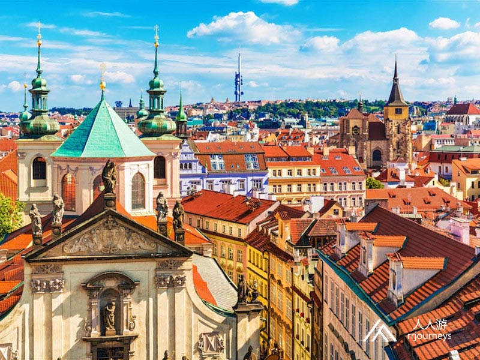
景点：高堡
这里是布拉格欣赏落日的绝佳观赏点，根据古老的传说, 这里曾居住过最早的波西米亚公爵。公元10世纪中期高堡成为城堡。从伏尔塔瓦河边陡峭的山崖上, 是眺望布拉格独一无二的视角。高堡公园里保留着11世纪留下的珍贵的罗马式圣马丁圆形小教堂。
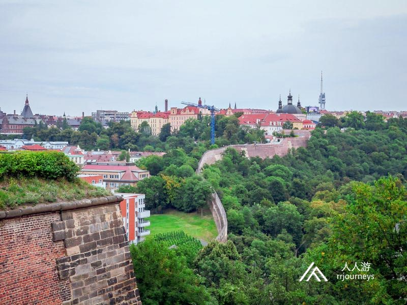
景点：跳舞的房子
跳舞的房子它建于1996年，它的神奇之处是给世人很多的想象。上世纪三四十年代的美国踢踏舞明星弗莱德和金格正是这建筑的灵感来源。现已成为继布拉格的中世纪建筑之后最吸引摄影爱好者的热点，底层有咖啡厅，顶层是个别致的球形餐厅。房子的晚间景色比白天会好看很多，在顶层餐厅用餐时还可以俯瞰整个城区的美景。
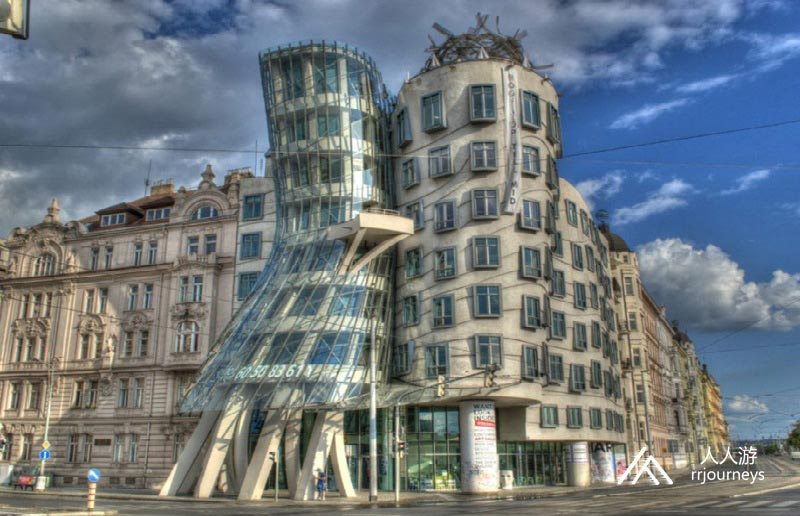
DAY 3 布拉格- 柏林
入住地点：柏林
柏林
柏林是德国首都，也是德国最大的城市，无论是从文化、政治、传媒还是科学上讲都称的上是世界级城市。柏林是欧盟区内人口第2多的城市，现有居民约340万人。城市周围三分之一的土地由森林、公园、花园、河流和湖泊组成。
柏林地区在八万年前（旧石器时代）已经有人类活动。1990年两德统一，该市重新获得全德国首都的地位，驻有147个外国大使馆。
柏林是欧盟内游客数量最多的城市之一，现已经发展成一个全球焦点城市，以崇尚自由生活方式和现代精神的年轻人和艺术家而闻名于世。
景点：德国国会大厦
官方名称为“帝国国会大厦大会场”，1894至1918年间是德意志帝国的帝国议会，1933年毁于火焚，二战后遭到废弃，直到1990年10月3日两德统一的时候才得到完全恢复，从1994年开始，每五年德国联邦大会在这里选举德国联邦总统。1999年起它是德国联邦议院的会址。
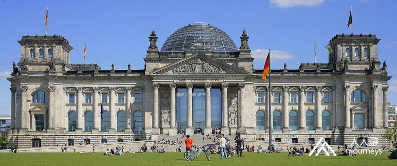
景点：柏林大教堂
柏林大教堂是柏林最大的教堂，建于1905年的新文艺复兴时期，是一座基督新教路德宗教堂，曾是德意志帝国霍亨索伦王朝的宫廷教堂。但该教堂并不是主教座堂，也从未有主教进驻。柏林的信义宗主教座堂是马利亚教堂，位于柏林电视塔旁，在穹顶回廊，可以俯瞰博物馆岛的迷人风光。
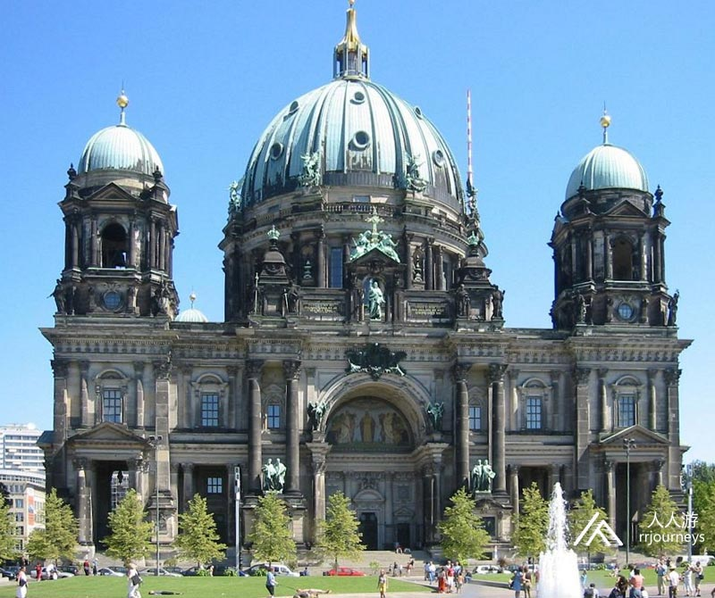
景点：东边画廊
东边画廊是柏林磨坊街柏林墙上的艺术作品展示区，是现存的三段柏林墙中最长最著名的一段，世界最大的露天涂鸦画廊，是柏林分裂与统一的历史证明。
该段柏林墙沿施普雷河一侧修筑（边界为施普雷河中心），全长1.3公里。该地成为了流行的自由象征和纪念地。
东边画廊收录了1990年在柏林墙东侧绘制的105幅绘画作品，2009年5月全面修复。
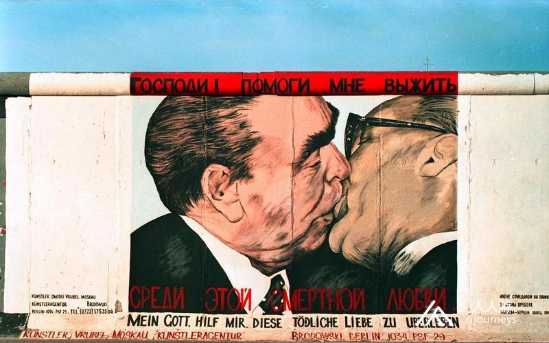
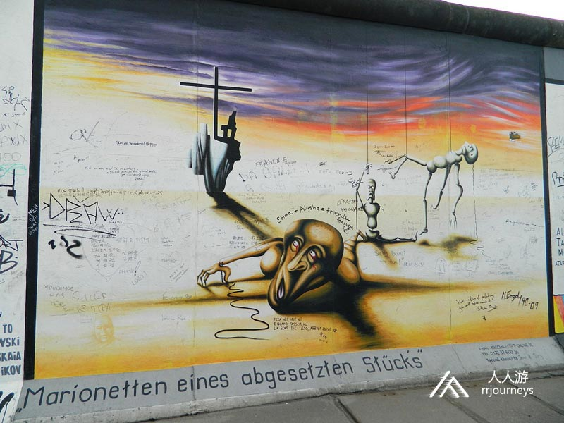
景点：勃兰登堡门
勃兰登堡门是位于德国首都柏林的新古典主义风格建筑，由普鲁士国王腓特烈•威廉二世下令，于1788年至1791年间建造的，以纪念普鲁士在七年战争中取得的胜利。 勃兰登堡门是柏林的象征，也是德国的国家象征标志，它见证了柏林、德国、欧洲乃至世界的许多重要历史事件，是德国统一的象征。
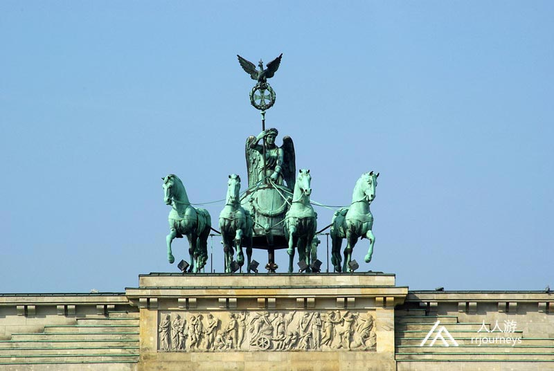
景点：胜利纪念柱
1864年为庆祝普鲁士在普丹战争中获胜而兴建。在普奥战争（1866年）和普法战争 (1870–71)中击败了奥地利和法国，给予了雕像新的含义。后来增加了胜利女神维多利亚青铜雕塑，高8.3米，重35吨。
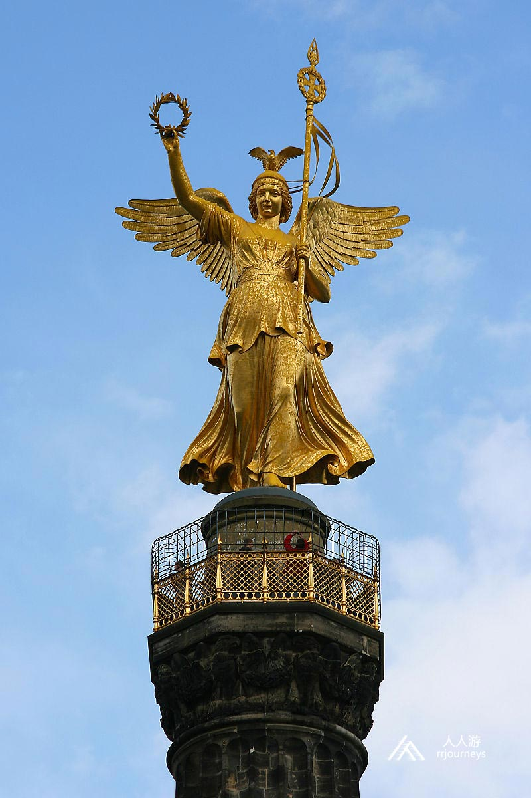
DAY4：柏林- 莱比锡
入住地点：莱比锡
景点：柏林电视塔
柏林电视塔高368米，是德国最高建筑物，同时也是欧洲第四高的建筑物。1969年正式开放，作为象征以及地标建筑，经常用它作为首都的象征。1979年民主德国将柏林电视塔作为文物保护建筑。 内部的观景塔包括203米的酒吧以及旋转餐厅。观光台设在204米处，在天气晴朗时可以看到42千米远，电梯到达观光台需时40秒。 旋转餐厅在观光台的上部，原为每小时旋转一圈，1990年改为每30分钟转一圈。
景点：洪堡大学
柏林洪堡大学是柏林最古老的大学，1809年以“柏林大学”之名所创立，是世界著名的顶尖学府，也是欧洲顶尖大学之一。1949年，为了纪念学校的创始人著名的洪堡兄弟，而重新命名为柏林洪堡大学。 该校被称为世界“现代大学之母”。截止2017年，共有55位校友、教师及研究人员获得过诺贝尔奖。 马克思、恩格斯、诗人海涅、格林兄弟（格林童话）、铁血宰相俾斯麦等曾就读过该校。物理学家爱因斯坦、普朗克，生物化学之父费歇尔，20世纪最伟大的数学家之一诺伊曼等等都曾在此任教。
景点：博物馆岛
柏林所有博物馆都由此发展而来，也是柏林的旅游重点。1999年，因建筑与文化的结合，博物馆岛被联合国教科文组织指定为世界文化遗产。
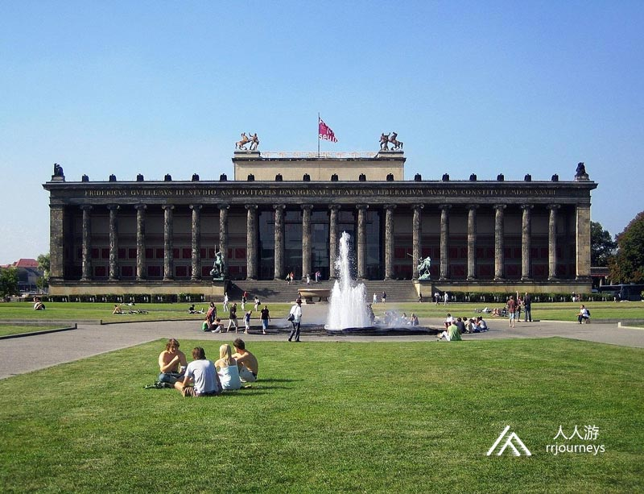
景点：菩提树下大街
菩提树下大街直接音译为林登大道，是欧洲最著名的大街之一。菩提树下大街是柏林市中心的交通枢纽，将不计其数的重要景观和名胜连接在了一起。作为传奇性的首都景观大街，它有很多动人的历史故事。
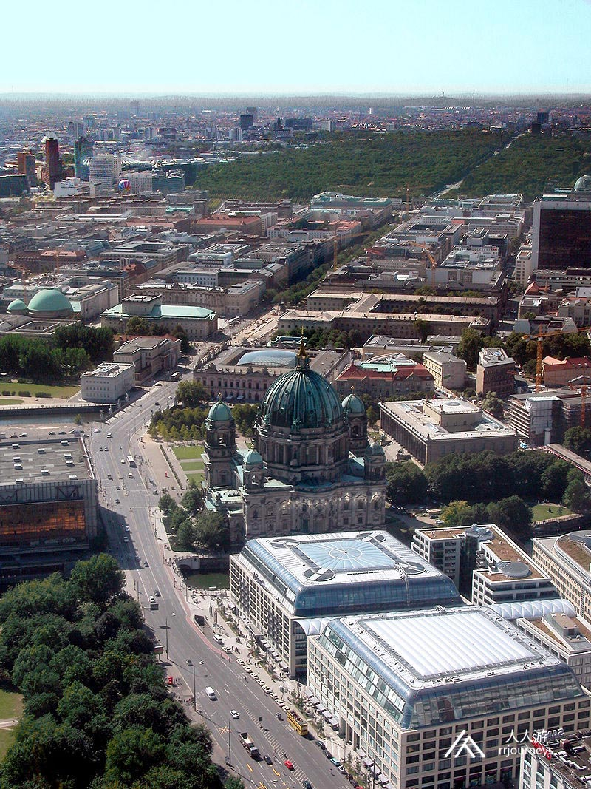
DAY5：莱比锡- 法兰克福
入住地点：法兰克福
莱比锡
莱比锡人口为600,000 ，是前东德地区第二大人口稠密的城市，仅次于（东）柏林。该城市的名称以及其许多行政区的名称都是斯拉夫语系。 自神圣罗马帝国以来，莱比锡一直是贸易城市。莱比锡曾经是欧洲的音乐和出版等领域的主要学习和文化中心之一。 今天的莱比锡是德国最宜居的经济中心，未来前景是德国所有城市中排名第二。莱比锡动物园是欧洲最现代化的动物园之一，德国排名第一，欧洲排名第二。 长期以来，莱比锡一直是古典和现代“ 黑暗另类音乐 ”的主要音乐中心。莱比锡音乐厅管弦乐团，成立于1743年，是世界上最古老的交响乐团之一。
景点：莱比锡老市政厅
莱比锡老市政厅位于莱比锡市集广场东侧，主宰着整个广场。后面是甜食市场。 老市政厅由市长和执政商人海欧纳莫斯•洛特修建于1556年。目前的建筑经过多次重建，多数属于20世纪初。老市政厅是德国最后一个也是最重要的文艺复兴纪念碑。1905年，市政府迁往莱比锡新市政厅。1905至1909年，老市政厅大幅度改建和装修，改设为城市历史博物馆。
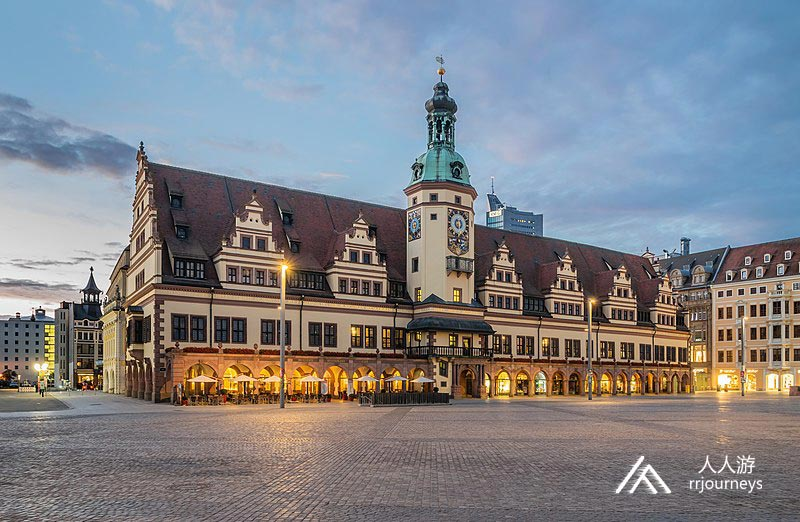
景点：莱比锡新市政厅
莱比锡新市政厅自1905年以来一直是莱比锡市政当局的所在地。它位于莱比锡的“环形公路”内，在西南角的马丁•路德•林市图书馆对面。主塔高114.8米，是德国最高的市政厅塔。
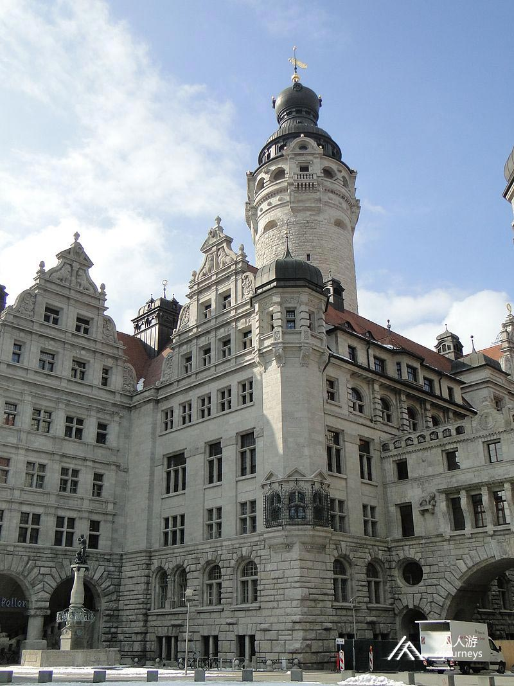
景点：莱比锡动物园
莱比锡动物园1878年首次开放。占地面积约27公顷，并因其大型建筑项目而闻名国际。它饲养了2000 多头狮子，250只稀有的西伯利亚虎和其他食肉动物，如熊。莱比锡动物园被称为“未来动物园”。
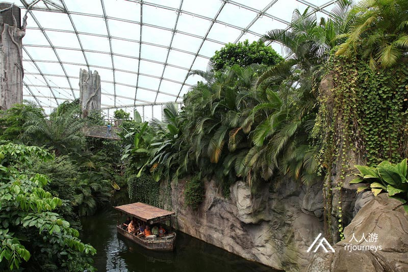
景点：奥古斯特广场
奥古斯特广场位于市中心的东端。是欧洲最大的广场，也是城市内环线的一部分，也是其电车网络的中央枢纽。
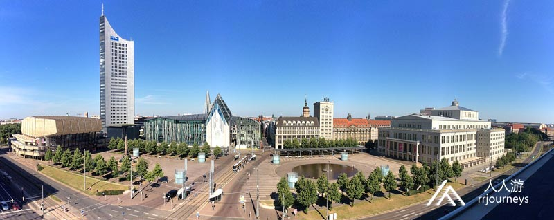
景点：莱比锡大学
莱比锡大学是世界上历史最悠久的一个大学之一，在德国第二古老的大学。该大学于1409年12月2日创建，最初由四个学院组成。自成立以来，该大学从事教学和研究已有600多年。
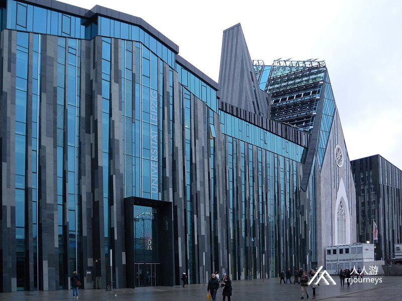
景点：莱比锡歌剧院
莱比锡歌剧院始建于1693年，是欧洲历史第三悠久的歌剧院。1943年12月3日，歌剧院在空袭中被毁。1956年，歌剧院开始重建，新歌剧院在1960年完工。
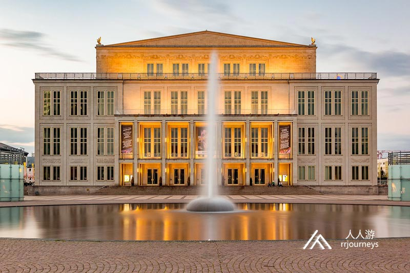
DAY6：法兰克福- 纽伦堡
入住地点：纽伦堡
法兰克福
法兰克福的正式全名为美因河畔法兰克福。城区拥有73万人，含周边城镇约有230万人。由于位居德国中部，法兰克福成为重要的交通枢纽。 法兰克福火车总站为德国流量第二大的火车站，国际机场为德国规模最大的商用民航机场，也是欧洲重要的航空中转站。全球化与世界城市研究网络将法兰克福评定为德国唯一阿尔法级的世界城市。 法兰克福是歌德的诞生地，法兰克福大学以歌德为大学命名，德国政府也在世界各地成立“歌德学院”致力于德语教学。歌德在德语文化世界具备国粹瑰宝的地位，让这座城市始终散发着与有荣焉的光彩。法兰克福大学近年来致力于发展创新，其金融法律项目连续多年荣登银行、证券与金融类法律硕士项目的全球前十。
景点：法兰克福旧市政厅
法兰克福旧市政厅是位于法兰克福旧城区市中心的一个中世纪建筑。法兰克福旧市政厅是法兰克福的地标之一。自1405年开始，法兰克福旧市政厅曾经是法兰克福的市政厅，超过600年。
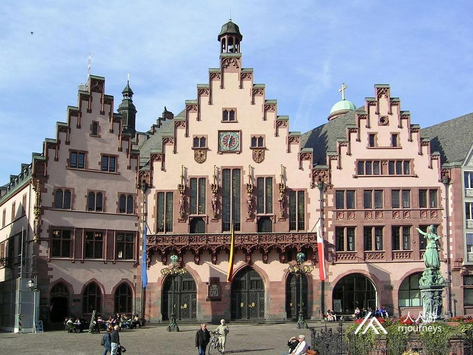
景点：法兰克福旧歌剧院
法兰克福旧歌剧院是位于美因河畔法兰克福的一座建筑。在历史上曾是歌剧院，现在是音乐厅，完工于1880年。二战期间歌剧院被破坏，并曾有德国最美的废墟之称。战后外部得到完整复原，内部则改为音乐厅。
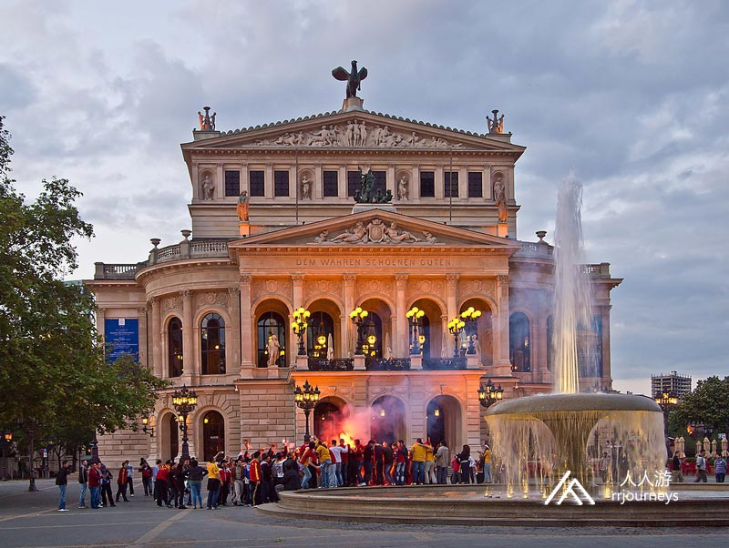
景点：新法兰克福老城区
新法兰克福老城区在二战期间遭到严重破坏。重建部分建始于1950年代的罗默市政厅，2010年开始了对老城区核心的重建。
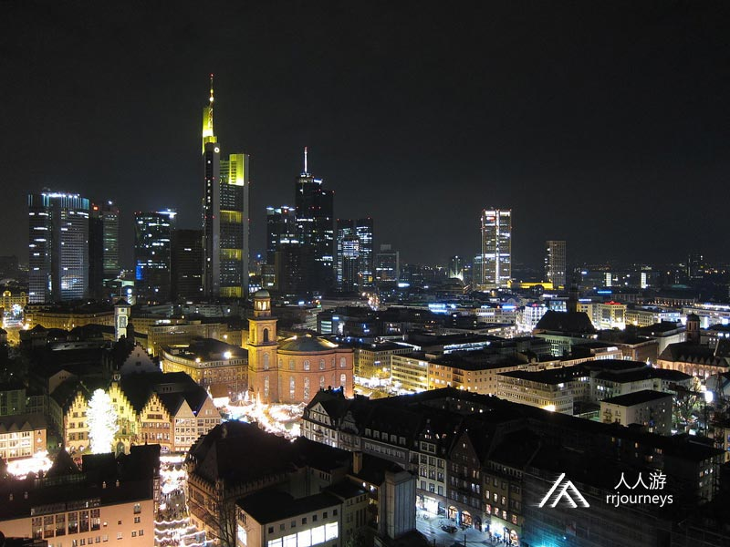
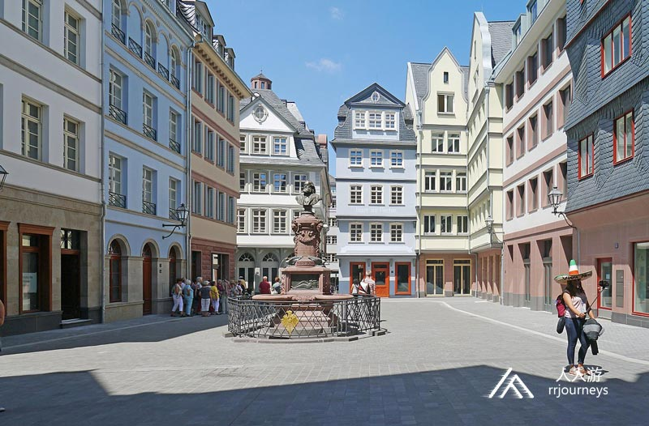
景点：欧洲之塔
欧洲之塔是高337.5米的电信塔。截至目前仍是德国第二高的人造建筑，仅次于柏林电视塔。
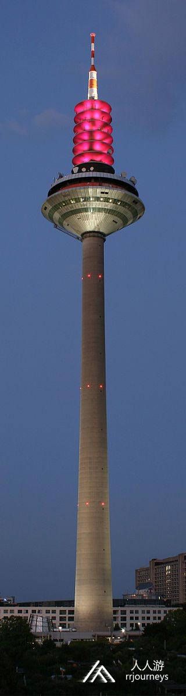
景点：德意志银行
德意志银行是一家跨国银行，总部位于德国法兰克福，并在纽约证券交易所及法兰克福证券交易所上市，德意志银行股份公司是全世界最大的投资银行之一。全球十大外汇交易商之首，2011年德意志银行资产超过法国巴黎银行，首次成为欧洲第一大行。
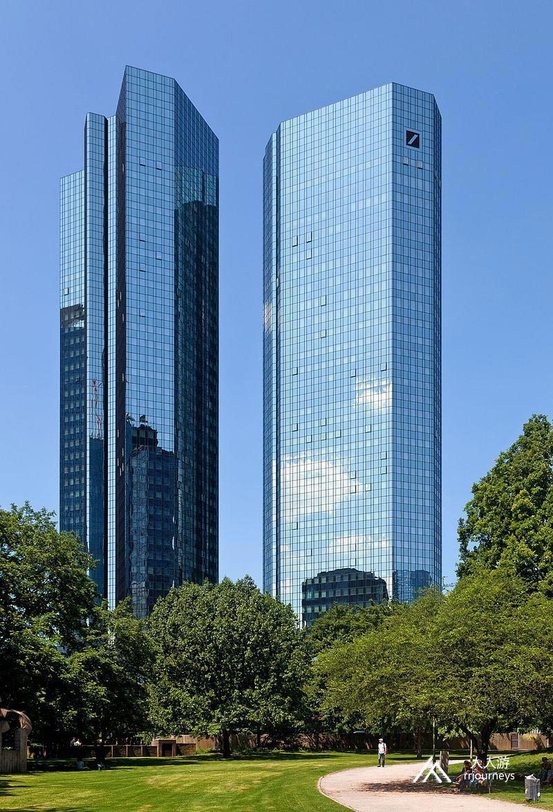
DAY7：纽伦堡- 慕尼黑
入住地点：慕尼黑
纽伦堡
纽伦堡是德国巴伐利亚州中弗兰肯行政区的中心城市，巴伐利亚州的第二大城市，仅次于首府慕尼黑，是世界著名大企业集团西门子公司的诞生地。纽伦堡与它的两座姊妹城市菲尔特和埃朗根相邻极近，城区相连，常被称作“大纽伦堡地区”。第二次世界大战结束之后,曾在此举行针对纳粹德国战犯的纽伦堡审判。
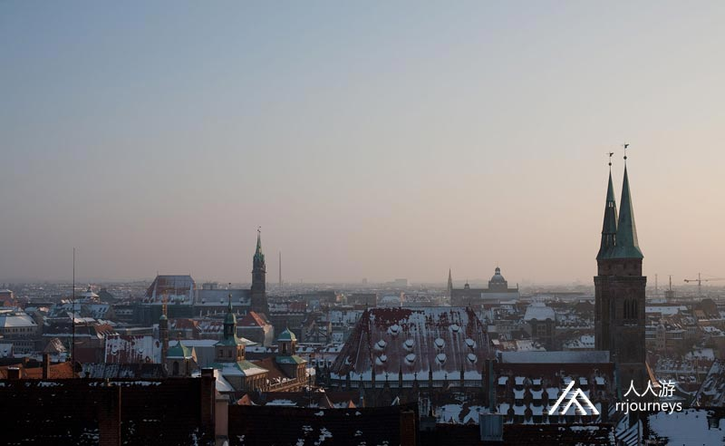
景点：纽伦堡城堡
纽伦堡城堡也称皇帝堡，始建于11世纪。16世纪中扩充至今天的规模，二战中被毁部分也已重建。11世纪到15世纪的约500年间，这是皇帝偏爱的行宫，很多神圣罗马帝国皇帝均在此居住过，包括著名的腓特烈一世（巴巴罗萨大帝）。习惯上，德意志国王在法拉克福大教堂被七大选王侯选胜出后，会在亚琛大教堂加冕，然后来到纽伦堡皇帝城堡举行首届国会。
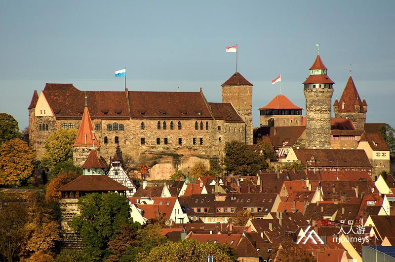
景点：纽伦堡国家剧院
该剧院是巴伐利亚州的四家剧院之一，演出歌剧，戏剧，芭蕾舞和音乐会，是德国最大的剧院之一。1903年至1905年以新艺术风格建造。
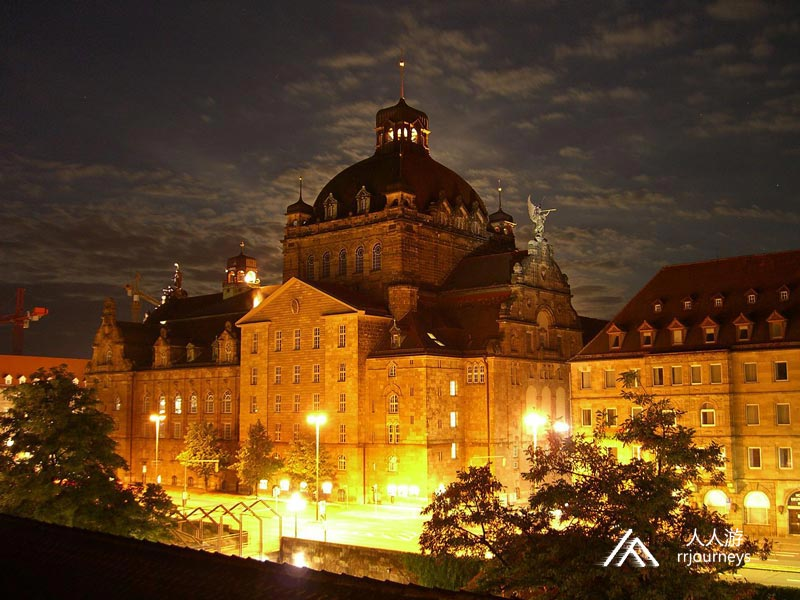
景点：圣母教堂
圣母教堂是哥特式砖砌建筑，1352年至1362年间，在神圣罗马皇帝查理四世的倡议下建造的。教堂内有许多雕塑，其中一些雕塑经过了精心修复。教堂里保存着许多中世纪的艺术品。
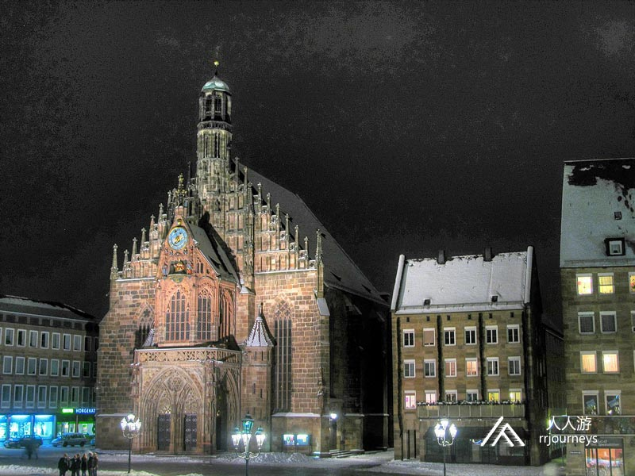
景点：佩格尼兹河
佩格尼兹河的来历是同名小镇，海拔425 m，长约113公里。
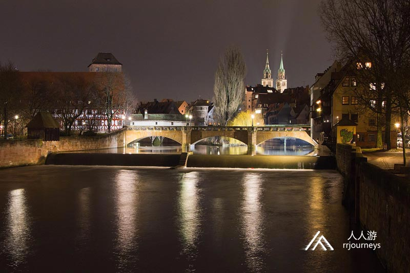
景点：阿尔布雷希特·杜勒之家
阿尔布雷希特•杜勒之家是德国文艺复兴时期的艺术家阿尔布雷希特•杜勒在1509年至1528年期间的家。
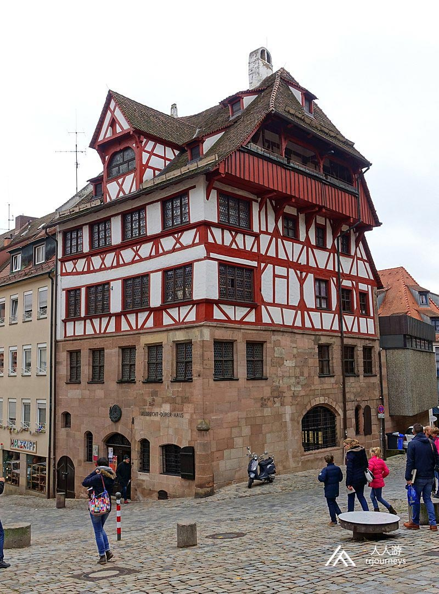
景点：圣劳伦斯堂
圣劳伦斯堂是德国纽伦堡的一座中世纪哥特式教堂，建于13-14世纪，为纪念罗马的圣劳伦斯。自宗教改革以来，一直是巴伐利亚最大的路德会教堂之一。第二次世界大战期间严重受损，战后修复。
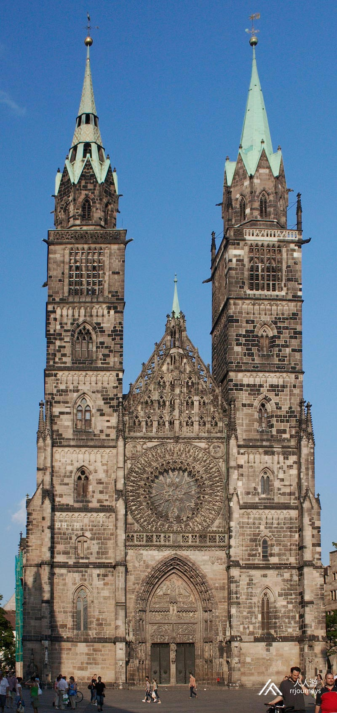
DAY8：慕尼黑- 维也纳
入住地点：维也纳
慕尼黑
慕尼黑是巴伐利亚州府，德国第三大城市（仅次于柏林和汉堡），共有逾290万人。慕尼黑被视为全球范围的文化、政治、科学和传媒中心之一，是欧洲经济最成功和发展最快的城市之一，也是德国最先进的城市之一。 安联、宝马、慕尼黑保险、西门子总部均设在慕尼黑。慕尼黑还被视为德国最安全的城市，其犯罪率为德国20万人口以上的城市中最低。 这里是众多国家和国际机构、重点大学和学院以及重要博物馆和剧院的所在地。通过大量值得一看的建筑——包括受保护的文物古迹和建筑群、国际体育赛事、展览会和代表大会、以及闻名全球的慕尼黑啤酒节，慕尼黑也是极具吸引力的国际旅游胜地。
景点：玛利亚广场和市政厅
玛利亚广场和市政厅建于1158年。广场得名于广场中间的玛利亚圆柱，圆柱修建于1638年，庆祝赶走瑞典人的军事占领。圆柱基座上有四组青铜雕像，四个小天使斩杀人类憎恨的四个妖怪，狮子代表战争、蜥蜴代表瘟疫、龙代表饥饿、蛇代表无信。慕尼黑旧市政厅和慕尼黑新市政厅都位于这个广场上。后者建于1867-1909年（二战后重建），是一座佛兰德斯哥特式建筑，其正立面的长度超过300英尺，精美的石雕装饰、260英尺高的塔楼-和钟琴，连同附近的圣伯多禄教堂、慕尼黑圣母教堂的双塔，构成该市天际线最独特的特征之一。
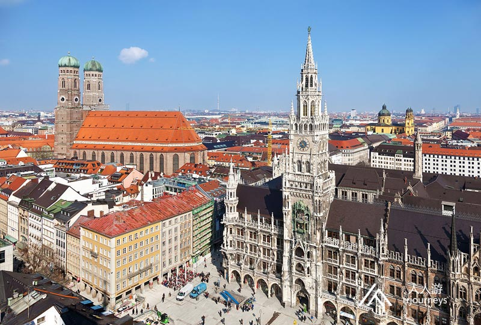
圣母教堂位于德国慕尼黑市中心圣母广场，是天主教慕尼黑-弗赖辛总教区的主教座堂，也是慕尼黑的重要地标和受欢迎的游览胜地。 座堂和新市政厅目前仍然是市中心最高的建筑之一，其钟楼从市内任何方向都能看到。慕尼黑市规定，禁止建造任何超过100米的建筑物。人们可以从南面的钟楼攀登上去，俯瞰城市全景以及阿尔卑斯山。
景点：宁芬堡宫
宁芬堡宫是德国慕尼黑的一座巴洛克式宫殿，于1675年落成，是巴伐利亚统治者的夏宫。目前宁芬堡宫仍然是属于巴伐利亚维特尔斯巴赫王朝的财产。
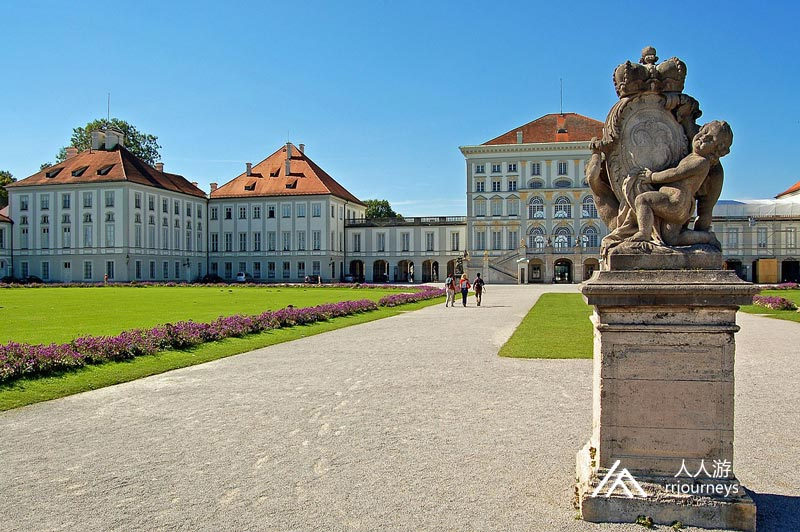
景点：宝马世界
宝马集团的一个多功能的客户体验和展览中心，位于德国慕尼黑，靠近宝马总部。其设计目的是为了展示宝马目前的产品，成为宝马汽车的配送中心，论坛举办场所和会议中心。
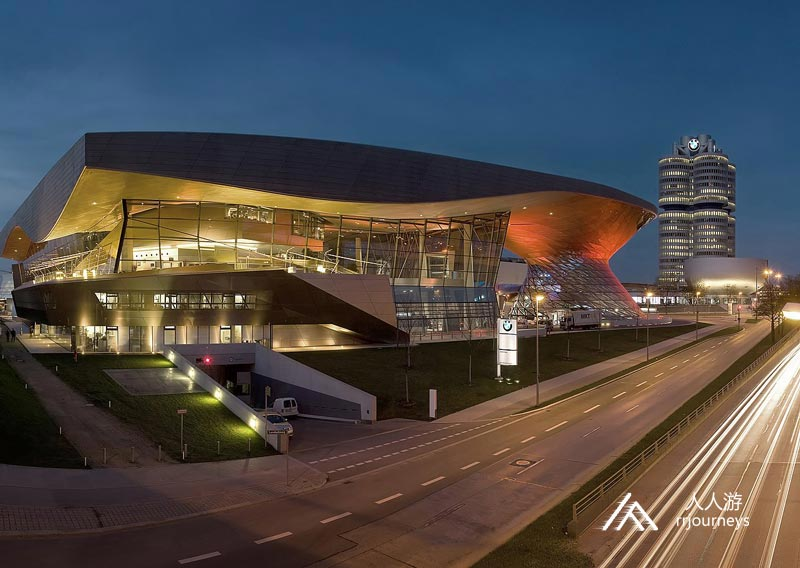
景点：统帅堂
统帅堂是音乐厅广场的一个凉廊，凉廊兴建于1841年到1844年，是为缅怀当时巴伐利亚君主时代的辉煌军事胜利而模仿佛罗伦萨的佣兵。 1932年希特勒上台后，统帅堂变成纳粹的圣地之一，不仅派驻卫兵，每年也举行纪念仪式悼念纳粹死者。统帅堂的形象也出现在纳粹党的血章上。
景点：安联球场
安联球场因冠名权售予德国的安联保险公司而命名，是一座位于慕尼黑北部的专业足球场，2005年4月正式启用。2005/06赛季开始成为拜仁慕尼黑及慕尼黑1860两间俱乐部的新主场，2006年世界杯揭幕战的比赛场地。
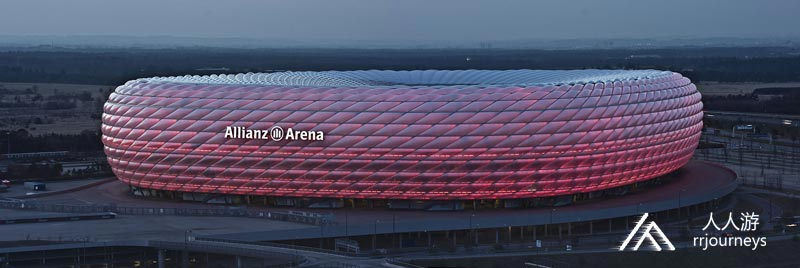
DAY9：维也纳- 布达佩斯
返回布达佩斯
维也纳
维也纳是奥地利共和国的首都，也是该国最大的城市，188.9万人口，是奥地利政治、经济、文化中心，该市人口数在欧盟城市中名列第七。维也纳仍是德语区第二大都市，仅次于柏林。2001年维也纳市中心古城区被指定为联合国世界遗产。2017年7月它被移至濒危世界遗产的名录中。 维也纳除了因为丰富的音乐历史遗产而被称作“音乐之都”，也因为它是世界第一个心理治疗师西格蒙德•佛洛伊德的家乡而被称作“梦之都”。维也纳是具有领导地位的的欧洲音乐中心。维也纳历史中心有着丰富的建筑群，包含巴洛克式的城堡和花园、19世纪末期环城大道上雄伟的建筑物、雕像以及公园。 维也纳也以高品质的生活著称。2005年至2010年间，维也纳是世界上国际会议和大会的首选城市。维也纳每年吸引超过 680万游客。
景点：维也纳市政厅
维也纳市政厅是维也纳市长和市议会的驻地。为哥特式风格，修建于1872年到1883年。塔楼顶部的市政厅铁人，是维也纳的标志之一。维也纳市政厅内设有古老的维也纳餐厅。传统的餐厅包括好几个巴洛克大厅，提供传统的维也纳美食。
景点：美泉宫
美泉宫是巴洛克艺术建筑，曾是神圣罗马帝国、奥地利帝国、奥匈帝国和哈布斯堡王朝家族的皇宫，如今是维也纳最负盛名的旅游景点。 美泉宫的名字来源于神圣罗马帝国皇帝马蒂亚斯。1612年他狩猎饮用此处泉水，清爽甘冽，遂命名此泉为“美泉”，此后“美泉”成为这一地区的名称。1743年，奥地利女皇玛丽娅•特蕾西娅下令在此营建气势磅礴的美泉宫和巴洛克式花园，总面积2.6万平方米，仅次于法国的凡尔赛宫。
景点：维也纳国立歌剧院
维也纳国立歌剧院是欧洲最重要的歌剧院之一，拥有1709个座位，于1861年至1869年建造的。维也纳爱乐的乐手都是从歌剧院乐团里选拔的。
景点：圣斯蒂芬大教堂
圣斯蒂芬大教堂是维也纳罗马天主教大主教管区的母教堂， 罗马式和哥特式大教堂，建立在两座早期教堂的废墟上，1147年圣化的第一座教区教堂。作为维也纳最重要宗教场所，圣斯蒂芬大教堂见证了哈布斯堡和奥地利历史上的许多重要事件，并以其多彩色的瓦屋顶成为该市最知名的标志之一。
景点：城市公园-约翰·施特劳斯纪念碑
在约翰施特劳斯纪念碑坐落在维也纳城市公园，是出镜率最高的古迹之一维也纳。它是为了纪念库尔斯（KursalonHübner）旁边的“华尔兹国王” 约翰·施特劳斯（ Waltz King）儿子。
景点：霍夫堡宫殿
霍夫堡宫殿是位于奥地利首都维也纳的宫殿建筑。1279作为奥地利公爵的驻地。霍夫堡宫殿曾经是哈布斯堡王朝治下，奥地利帝国与奥匈帝国皇帝的冬宫。（夏宫是美泉宫）。今日的霍夫堡宫殿是奥地利总统官邸所在地。
Germany, Austria and Czech Republic: The Unmissable Trio
This unmissable trio is a rollercoaster of thrills, temptations and endless excitement. You will experience Germany’s soul-stirring scenery, big-city beauties, spirit-lifting culture, romantic palaces and half-timbered towns. Berlin is a city you cannot miss. Its close competitor is Austria’s treasured Vienna - the city that is all about the quality of life. And last but not least is Brno - the daring architect’s exploring ground. You cannot miss the Unesco-protected Vila Tugendhat.
时间
地点
景点（可以 +/- ）
入住地点
第一天
布达佩斯出发
344公里
Brno
捷克
斯皮尔博城堡, 旧市政厅, Macocha峡谷, 图根哈特别墅, Lužánky公园, 摩拉维亚喀斯特, Sloupsko-šošůvské jeskyně, Vila Tugendhat
第二天
206公里
Prague
查理大桥, 布拉格城堡, 高堡, 跳舞的房子, 布拉格天文钟, 圣维特主教座堂, 火药塔, 老城广场, 市民会馆, 布拉格节拍器
第三天
349公里
Berlin
德国
勃兰登堡门, 柏林电视塔, 夏洛滕堡宫, 查理检查哨, 柏林大教堂, 御林广场, 胜利纪念柱, 佩加蒙博物馆
第四天
190公里
德国国会大厦, 东边画廊, 柏林墙遗址纪念公园, 欧洲被害犹太人纪念碑, 亚历山大广场, 波茨坦广场, 夏洛滕堡宫
Leipzig
第五天
391公里
民族大会战纪念碑, 圣尼古拉教堂, Leipzig Panometer, 集市广场, 圣多马教堂
Frankfurt
第六天
225公里
美因塔, 螺旋森林, 法兰克福棕榈园, 法兰克福市政厅, 铁桥, 法兰克福主教座堂
Nuremberg
第七天
170公里
纽伦堡城堡, 美泉, Handwerkerhof Nürnberg, 纳粹帝国党代会会址文献中心, 婚姻生活喷泉
Munich
第八天
402公里
宁芬堡宫, 玛利亚广场, 谷物市场, 施莱斯海姆宫, 和平天使, 卡尔广场
Vienna
奥地利
第九天
243公里到布达佩斯
美泉宫, 斯蒂芬主教座堂, 霍夫堡, 维也纳国立歌剧院, 帕恩多夫
-
6天5夜乌克兰小众深度游
7天6夜克罗地亚、波黑小众
5天4夜波兰、斯洛伐克小众
四天三夜奥地利、斯洛文尼亚
匈牙利最大的滑雪场一日游
6天5夜，奥地利滑雪自由行
7天6夜，奥地利旅游滑雪自
4天3夜，奥地利滑雪自由行
Copyright 2020 www.rrjourneys.com
人人游 旅游官方网站 版权所有 All Rights Reserved